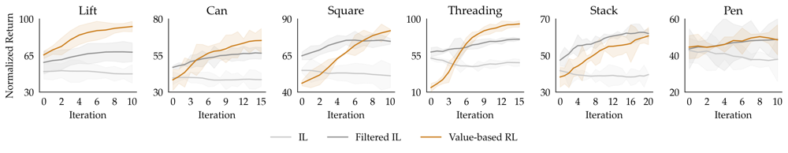

📃Batch Online RL 리뷰
- 🤖 로봇 분야의 Batch Online RL은 기존의 모방 학습 기반 방법론으로 다양한 자율 수집 데이터를 효과적으로 활용하는 데 어려움을 겪습니다.
- 💡 체계적인 연구를 통해 효과적인 Batch Online RL을 위해서는 Value-based RL 알고리즘, Implicit policy extraction 방식, 그리고 표현력 있는 정책(expressive policy)이 핵심 요소임을 밝혔습니다.
- ✅ 이러한 발견을 바탕으로 논문은 이 요소들을 결합한 레시피를 제안하며, 시뮬레이션 및 실제 로봇 태스크에서 상당한 성능 향상을 보여주었습니다.
Brief Review
로봇 학습 분야는 데이터 부족으로 인해 어려움을 겪고 있으며, 이러한 한계를 극복하기 위해 로봇이 스스로 데이터를 수집하여 정책을 개선하는 “batch online RL” 패러다임이 주목받고 있습니다. 이 패러다임은 인간의 데이터 수집 노력을 크게 줄이면서 자가 개선의 이점을 얻을 수 있지만, 현재 알고리즘들은 자율적으로 수집된 데이터를 효과적으로 활용하지 못하는 문제에 직면해 있습니다. 예를 들어, 기존의 “imitation learning” 또는 “filtered imitation learning” 방법은 자율 수집 데이터를 통해 효율적으로 성능을 개선하거나 최적점에서 빠르게 수렴하지 못하는 경우가 많습니다.
본 논문은 효과적인 “batch online RL”을 위해 중요한 요소가 무엇인지 탐구하기 위해 체계적인 실증 연구를 수행합니다. 연구는 세 가지 축—
- “algorithm class”,
- “policy extraction methods”,
- “policy expressivity”
—을 중심으로 이루어지며, 이러한 축들이 자율적으로 수집된 데이터 양에 따른 성능 및 확장에 어떻게 영향을 미치는지 분석합니다.
분석을 통해 몇 가지 주요 관찰을 도출합니다. 첫째, “batch online RL”에서 “Q-functions”를 사용하여 학습을 안내하는 것이 “imitation-based methods”보다 성능을 현저히 개선함을 확인했습니다. 둘째, 이를 기반으로 “policy extraction” 방식이 중요함을 보여줍니다. 특히 정책의 분포 내에서 최적의 행동을 선택하는 “implicit method of policy extraction”이 전통적인 “offline RL”의 “explicit policy extraction” 방식보다 필수적이며 뛰어난 성능을 보입니다. 셋째, 표현력이 풍부한 정책 클래스(“expressive policy class”)가 덜 표현적인 정책 클래스(“less expressive policy classes”)보다 선호됨을 보여줍니다.
이러한 분석을 바탕으로 효과적인 “batch online RL”을 위한 일반적인 레시피를 제안합니다. 제안하는 레시피는 “actor”로서 표현력이 풍부한 “IL policy”를 학습하고, 자율 데이터에 대해 “Q-function”을 학습하며, “rollout”을 위한 정책으로 “Q-function”을 사용한 “implicit policy extraction”을 수행하는 것입니다.
본 논문에서 사용된 “Value-based RL” 방법 중 하나인 “Implicit Q-Learning (IQL)”은 “Q-function” Q_\phi와 “value function” V_\psi를 다음 목표 함수를 최소화하여 학습합니다.
L_Q(\phi) = E_{(s,a,r,s') \sim D}[h(r + \gamma V_\psi(s') - Q_\phi(s, a))^2]
L_V(\psi) = E_{(s,a) \sim D} [L_\tau^2 (Q_{\phi'}(s, a) - V_\psi(s))]
여기서 L_\tau^2(x) = |\tau - 1(x < 0)|x^2는 기대치를 추정하기 위한 로스 함수입니다.
“Explicit policy extraction”의 예시로 사용된 “Advantage-Weighted Regression (AWR)”은 다음 목적 함수를 최대화하여 정책을 학습합니다.
J_\pi(\theta) = E_{(s,a) \sim D} [e^{\beta(Q(s,a)-V(s))} \log \pi_\theta(a|s)]
제안된 레시피에 간단한 추가 사항으로, “rollout” 중 “Ornstein–Uhlenbeck process”로 모델링되는 “temporally-correlated noise”를 소량 추가하여 더 많은 다양성을 얻고 성능을 더욱 향상시킬 수 있음을 보여줍니다.
제안된 레시피는 이전 방법들 대비 훨씬 우수한 성능과 확장성을 달성하며, “Robomimic”, “Adroit”, “MimicGen”의 6가지 복잡한 로봇 조작 작업에서 최대 2배의 성능 향상을 보였습니다. 또한, 실제 로봇 작업(“hanging tape on a hook”)에 적용하여 “batch online RL” 3번의 반복만으로 초기 정책 성공률 대비 30% 개선을 달성하며 레시피의 실용성을 검증했습니다.
Detail Review
“What Matters for Batch Online Reinforcement Learning in Robotics?” 논문 리뷰
연구 동기 및 문제 설정
현대 딥러닝은 대규모 데이터 활용을 통해 발전해왔지만, 로봇 공학 분야는 현실적으로 사용할 수 있는 데이터의 양이 현저히 부족합니다. 로봇에게 일일이 사람이 시연하여 데이터를 모으는 것은 큰 노력과 시간이 들기 때문에, 사람의 개입을 최소화하면서 로봇이 스스로 학습 데이터를 모으고 성능을 향상시키는 방법에 대한 관심이 높습니다. 이를 위해 과거에는 사람이 제공한 시연 데이터를 모방하는 모방학습(Imitation Learning, IL)을 주로 활용했지만, 이 방식은 주어진 데이터 범위 이상으로 성능을 끌어올리는 데 한계가 있습니다.
강화학습(RL)을 적용하면 로봇이 스스로 시행착오를 겪으며 향상될 수 있다는 점에서 매력적이지만, 온라인 RL(online RL), 즉 로봇이 실시간 상호작용하며 동시에 학습을 진행하는 방법은 현실 로봇에게 적용하기에 어려움이 많습니다. 예를 들어, 학습 도중 로봇이 계속 움직이며 학습해야 하므로 물리적 피로도나 안전 문제, 그리고 학습 과정에서 초기 정책이 망가지는 분포 이동(distribution shift) 문제가 나타날 수 있습니다.
이에 대한 중간 해결책(middle ground)으로 제시된 개념이 “배치 온라인 RL”(batch online RL)입니다. 이 방법에서는 초기에는 오프라인 데이터로 정책을 학습시키고 (예: 시연 데이터로 초기 정책 \pi\_0 학습), 이 정책을 로봇에 배치하여 일정량의 경험을 한꺼번에 수집한 뒤, 로봇을 멈추고 모은 데이터를 오프라인으로 학습하여 정책을 갱신합니다. 이렇게 새 정책 \pi\_1을 얻으면 다시 로봇을 사용해 자율적으로 데이터를 모으고(rollout), 축적된 데이터셋으로 다시 학습을 진행하는 과정을 반복합니다. 요컨대, 실험 환경에서 정책의 실행(데이터 수집)과 정책의 학습(업데이트) 단계를 교대로 배치 단위로 수행함으로써, 온라인 RL의 자기 향상 능력을 유지하면서도 실제 배치 시에는 학습을 하지 않으므로 안정성과 효율성을 높인 접근입니다. 이러한 Batch online RL은 스스로 모은 대량의 데이터로 정책을 향상시킬 수 있어 잠재적으로 대규모 로봇 학습을 가능하게 할 것으로 기대됩니다.
하지만 배치 온라인 RL을 실제로 성공적으로 구현하는 데에는 여전히 도전과제가 있습니다. 과거 일부 연구들은 배치 온라인 RL 환경에 모방학습이나 변형된 모방학습(filtered IL) 알고리즘을 적용해 보았으나, 자율 수집한 데이터로부터 효과적으로 성능을 높이지 못하거나 금세 어느 수준에서 성능이 정체되는 문제가 보고되었습니다. 이에 따라 이 논문에서는 “로봇 배치 온라인 강화학습에서 무엇이 성능 향상을 결정짓는 핵심 요소인가?”라는 질문을 제기하고, 체계적인 실험을 통해 답을 찾고자 합니다.
기존 강화학습 방식과의 차별점
배치 온라인 RL은 기존의 오프라인 RL 및 온라인 RL과 비교해 몇 가지 측면에서 차별화됩니다.
온라인 RL 대비: 전통적인 온라인 RL에서는 로봇이 환경과 상호작용하며 즉시 학습을 업데이트하지만, 배치 온라인 RL에서는 로봇이 데이터만 수집하고 학습은 나중에 오프라인으로 진행됩니다. 이로 인해 온라인 RL에서 문제가 되었던, 학습 중 실제 로봇을 지속 운용해야 하는 부담과 훈련 과정에서의 불안정성을 줄일 수 있습니다. 논문에서도 “배치 온라인 RL은 정책 훈련과 데이터 수집을 분리함으로써 온라인 RL의 복잡한 문제 없이도 자체 롤아웃 데이터를 활용한 향상을 가능케 한다”고 설명합니다. 또한 온라인으로 바로 미세조정(fine-tuning)하는 경우 나타날 수 있는 분포 차이로 인한 성능 붕괴나 초기 정책의 망각 현상을 배치 방식은 완화해 줍니다.
오프라인 RL 대비: 오프라인 RL은 고정된 정적 데이터셋을 가지고 한 번에 학습을 끝내는 반면, 배치 온라인 RL에서는 새로운 데이터를 지속적으로 추가하며 여러 단계에 걸쳐 정책을 개선합니다. 즉, 오프라인 RL이 초기 주어진 데이터 품질에 전적으로 의존하는 데 반해, 배치 온라인 RL은 정책이 개선됨에 따라 새로운 (잠재적으로 더 나은) 데이터를 모아 학습함으로써 성능을 점진적으로 높일 수 있습니다. 한편 배치 온라인 RL도 오프라인 RL처럼 훈련과 데이터 수집이 분리된 상태에서 학습하므로, 순수 온라인 RL보다 안정적으로 정책을 향상시킬 수 있다는 장점이 있습니다.
정리하면, 배치 온라인 RL은 오프라인과 온라인의 절충 방식으로, 자율주행 데이터 수집의 이점과 오프라인 학습의 안정성을 결합한 프레임워크입니다. 이 접근은 로봇이 스스로 데이터를 모으면서도, 모은 데이터로 학습을 별도로 수행함으로써 실시간 학습의 부담 없이도 자기 개선을 달성하려는 것입니다.
제안된 접근 방식 및 프레임워크 설명
이 논문에서는 배치 온라인 RL 문제에서 어떤 접근이 가장 효과적인지를 실험적으로 규명한 뒤, 그 결과를 토대로 일반적인 해법(recipe)을 제안합니다. 연구진은 배치 온라인 RL에 적용될 수 있는 방법들을 세 가지 축으로 분류하여 실험하였는데, 그 축은 (i) 알고리즘 유형, (ii) 정책 추출 방법, (iii) 정책의 표현력입니다. 각 축에서 어떤 선택을 하느냐가 성능에 큰 영향을 미친다는 것을 확인한 후, 최적의 조합을 일반 원칙으로 정리한 것이 이 논문의 핵심 제안입니다.
① 알고리즘 클래스: 먼저 정책을 개선하는 알고리즘으로 세 가지를 비교했습니다. 하나는 모방학습(IL) 기반으로, 수집된 데이터를 행동클로닝(Behavior Cloning) 방식으로 학습하는 가장 단순한 방법입니다. 다른 하나는 필터링된 모방학습(filtered IL)으로, 자율주행으로 모은 데이터 중 성공적이거나 양질의 부분만 선별하여 모방학습에 사용하는 기법입니다. 마지막은 가치 기반 강화학습(value-based RL)으로, 수집 데이터에서 보상신호를 활용하여 Q-함수 등 가치함수를 학습하고 이를 통해 정책을 업데이트하는 방법입니다. 이 때 가치 기반 방법은 실패 사례 등도 학습에 활용하고 Bellman 업데이트를 수행하기 때문에, 오직 성공 사례에 의존하는 IL보다 잠재적으로 더 풍부한 학습이 가능합니다.
② 정책 추출 방법: 다음으로, 가치 기반 RL을 쓸 경우 정책을 얻는 방식을 두 가지 고찰했습니다. 명시적 정책 추출(explicit policy extraction)은 오프라인 RL에서 흔히 쓰이는 접근으로, Q함수를 최대화하면서도 행동 분포가 기존 데이터에서 크게 벗어나지 않도록 정책을 학습하는 기법입니다. 예를 들면 Advantage-Weighted Regression (AWR) 같은 알고리즘이 이에 해당하며, Q함수의 신호를 정책 학습에 직접 반영하지만 동시에 행동클로닝 제약을 줘서 기존 데이터 분포와의 거리를 유지하게 합니다. 반면 암시적 정책 추출(implicit policy extraction)은 정책을 별도로 최적화하지 않고, 실행 시에 Q함수를 이용해 최선의 행동을 고르는 방식입니다. 구체적으로는 매 스텝 상태에서 현재 정책으로 여러 후보 행동을 샘플링한 후, Q값이 가장 높은 행동을 실제 실행에 선택하는 방식입니다. 암시적 방법은 Q함수의 정보를 정책 파라미터 학습에 직접 반영하지 않기 때문에 학습이 더 안정적일 수 있지만, 그 대신 Q함수의 유용한 신호를 정책 업데이트에 활용하지 못한다는 trade-off가 있습니다.
③ 정책의 표현력(Expressivity): 마지막으로 정책 모델의 클래스에 따른 표현력 차이를 실험했습니다. 일반적으로 강화학습에서 많이 쓰이는 정책 모델은 가우시안 정책으로, 상태를 입력받아 행동의 평균과 분산을 출력하고 정규분포로 행동을 샘플링하는 비교적 단순한 형태입니다. 이런 가우시안 정책은 경험이 풍부하지 않은 초기 단계에서는 안정적이고 추론 속도가 빠른 장점이 있지만, 복잡한 여러 모달리티의 행동분포를 표현하기에는 한계가 있습니다. 이에 비해 논문에서 표현력이 높다고 지칭하는 정책은 디퓨전 모델 기반 정책(diffusion-based policy)으로, 마르코프 확률과 노이징/디노이징 과정을 활용하여 주어진 데이터를 생성 모델 형태로 학습하는 방식입니다. 디퓨전 정책은 다중 모달의 행동 분포를 더 잘 모델링할 수 있고, 특히 암시적 정책 추출 방식과도 잘 맞는 특성이 있습니다 (정책 자체가 다양한 후보 행동을 샘플링해낼 수 있으므로, 거기서 Q값이 높은 것을 고르는 전략과 시너지가 좋습니다).
이상 세 가지 축에서 찾은 시사점을 바탕으로, 저자들은 배치 온라인 RL을 효과적으로 수행하기 위한 일반 해법(recipe)을 제안합니다:
- 가장 첫 단계로 표현력이 높은 정책 모델을 IL(모방학습)로 초기 학습하여 배치 온라인 RL의 배우(행동자)로 사용합니다. (논문에서는 Diffusion 기반 정책네트워크를 시演 데이터로 학습하여 사용했습니다.)
- 병행해서, 동일한 자율수집 데이터에 대해 Q-함수를 학습합니다 (논문 구현에서는 IQL 알고리즘, 즉 오프라인 RL 방식으로 Q를 업데이트).
- 정책을 업데이트할 때는 암시적 정책 추출 방식을 활용합니다. 즉, 새로운 데이터를 모을 때 방금 학습한 Q함수를 이용해 현재 정책에서 샘플한 여러 행동 중 Q값이 가장 높은 행동을 실행하도록 합니다. 이렇게 하면 명시적으로 정책을 업데이트하지 않고도 Q함수가 높은 방향으로 행동이 유도되어 정책 향상이 이뤄집니다.
- 위 과정에서 필요한 경우 정책의 탐색을 돕기 위해 시간적으로 상관된 노이즈(Ornstein–Uhlenbeck 과정 등을 통한 노이즈)를 행동에 추가로 주입할 수 있습니다. 이는 로봇이 좀 더 다양한 시도를 해보도록 유도하여 데이터 다양성을 높이기 위함입니다.
이러한 레시피를 요약하면, “표현력 높은 정책 + Q함수 기반 가치학습 + 암시적 정책 추출”의 조합으로 정책을 반복 개선하는 것입니다. 논문에서는 이 조합을 IDQL (Implicit Diffusion Q-Learning) 알고리즘으로 구현했으며, 이는 배치 온라인 RL 1회 반복에 해당하는 알고리즘으로 볼 수 있습니다. 전체 배치 온라인 RL 프로세스에서는 이 과정을 여러 iteration 수행하면서 정책을 향상시킵니다. 마지막으로, 저자들은 레시피의 실용적 보완책으로 행동 노이즈 주입을 제안하였는데, 실험 결과 약간의 노이즈 추가는 적은 데이터 환경에서 성능 향상을 가져오지만 데이터가 충분히 많아지면 자연스럽게 탐색 다양성이 확보되기 때문에 노이즈의 효과는 제한적임을 확인했습니다. 즉, 노이즈 추가는 선택 사항이지 필수 요소는 아니며, 다만 데이터가 부족한 초기 단계에서는 소량의 노이즈로도 성능을 높이는 보탬이 될 수 있습니다.
실험 환경 및 평가 지표
저자들은 제안한 접근과 다른 대안들을 여러 시뮬레이션 환경과 실제 로봇 작업에 걸쳐 평가했습니다. 시뮬레이션 실험으로는 총 6개의 복잡한 로봇 조작 과제를 선택했는데, 구체적으로 RoboMimic 데이터셋의 Lift, Can, Square 작업, MimicGen의 Stack 및 Threading 작업, 그리고 Adroit의 Pen 작업입니다. 이들 과제는 연속적 제어가 필요한 까다로운 작업들로, 난이도에 따라 초기 시 데이터(D₀)의 크기를 5개에서 최대 100개까지 제공하여 초기 정책 \pi_0의 성공률이 약 30~65% 수준이 되도록 설정했습니다. 이렇게 비교적 미완성된 초기 성능에서 시작함으로써, 향후 스스로 개선할 여지가 충분한 현실적인 시나리오를 만들었습니다. 각 과제마다 배치 온라인 RL의 반복(iteration)을 10~20회 수행하며, 매 iteration마다 200개의 에피소드(rollouts)를 수집하도록 설정했습니다. 학습 중 성능 평가를 위해 각 반복 단계마다 정책을 고정시키고 여러 에피소드를 실행하여 얻은 누적 보상(returns)이나 성공률을 측정하였으며, 이러한 지표를 초기 성능 대비 정규화(normalize)하여 비교하였습니다. (그래프 상에서 100%는 과제 성공률 100% 또는 주어진 목표 대비 최고의 성능으로 정규화되어 있습니다.)
한편 실제 로봇 실험으로는 비전 기반의 로봇 조작 작업을 하나 선정했습니다. 7자유도 Franka 암 로봇으로 테이프 롤을 집어서 고리에 거는 작업을 수행했으며, 로봇 손목 카메라와 외부 카메라에서 얻은 RGB 영상 및 로봇의 관절각/엔드이펙터 상태 등의 proprioceptive 정보를 입력으로 사용했습니다. 이 작업은 초기 정책으로 성공하기 어렵도록 설계된 어려운 과제로, 배치 온라인 RL을 통한 성능 개선 여부를 확인하기에 적합합니다.
주요 실험 결과와 분석

주황색 곡선은 가치 기반 RL 방법, 회색은 필터링된 IL, 연한 회색은 기본 IL을 나타냅니다. 가치 기반 RL 방법이 대부분의 작업에서 반복이 진행될수록 가장 높은 성능 향상을 보이고 있으며, IL 기반 방법들은 초기 성능에서 크게 개선되지 못하거나 일부 향상 후 정체되는 양상을 보입니다.
1) 알고리즘 클래스 비교: 가치 기반 RL 방법이 두드러지게 우수한 성능을 보였습니다. 위 그래프에서 보이듯 IL(모방학습)만으로 학습하는 경우 자율적으로 모은 실패 데이터까지 그대로 모방해버리기 때문에 오히려 성능이 떨어지거나 거의 향상되지 못했습니다. 필터링된 IL의 경우 초기에는 약간의 개선을 보였지만, 곧 아직 최적이 아닌 성능 수준에서 정체되어 더 이상 나아지지 못하는 경향이 있습니다. 반면 가치 기반 RL은 보상 신호를 통해 성공/실패 사례를 모두 학습에 활용함으로써, iteration을 거듭할수록 지속적인 성능 향상을 이루었고 최종적으로 가장 높은 성과를 달성했습니다. 이처럼 RL 방법이 우수한 이유는, 자율 수집한 데이터에 내재한 다양한 상황과 실패 사례로부터도 교훈을 얻어 정책을 수정할 수 있기 때문입니다. 실제로 논문에서는 RL 기법이 배치 데이터를 더 다양하게 활용하여 IL에 비해 정책 탐색 범위를 넓힌다고 분석합니다. 예를 들어, 성공한 경로들의 상태 방문 분포를 시각화한 결과 RL 알고리즘은 IL에 비해 훨씬 폭넓은 상태 공간을 커버하고 있었는데, 이는 RL이 다양한 시도를 통해 새로운 성공 경로를 개척한 반면 IL은 주어진 시演 궤적 주변만 반복했음을 보여줍니다. 또한 데이터 규모를 확장했을 때도 RL의 강점이 확인되었습니다. 배치당 수집하는 에피소드 수(M)를 소/중/대로 늘려가며 성능을 비교한 결과, 가치 기반 RL은 데이터가 많아질수록 성능이 꾸준히 향상된 반면 IL 기반 방법들은 일정 수준 이상에서 추가 데이터가 효과를 발휘하지 못하고 정체되었습니다. 즉 배치 온라인 RL에서 더 큰 데이터로 스케일하려면, IL로는 한계가 있고 RL 알고리즘이 필수적임을 알 수 있습니다. 다만 저자들은 “가치 기반 RL만으로 충분하지 않다”고 강조하는데, 이는 아래의 다른 요소들(정책 추출 방식, 정책 표현력)도 적절히 선택해야 진정한 효과를 볼 수 있다는 의미입니다.
2) 정책 추출 방법 비교: 명시적 vs. 암시적 두 방식의 성능 차이도 뚜렷했습니다. 실험에 따르면 암시적 정책 추출이 반복 학습 후의 최종 성능에서 항상 우월했습니다. 흥미로운 점은, 학습 초반에는 명시적 방법(AWR 등으로 정책을 함께 최적화한 경우)이 다소 높은 성능으로 시작하는 경향이 있었으나, 여러 iteration을 거친 후에는 암시적 방법이 훨씬 더 크게 성능을 끌어올렸다는 것입니다. 명시적으로 정책을 업데이트하는 방법은 Q함수의 신호를 직접 활용한다는 장점 때문에 초기에 빠르게 성능을 올릴 수 있지만, 새로운 자율 데이터가 누적되면서 기존 행동 분포와 달라지는 변화에 적응하지 못하고 발목을 잡히는 것으로 해석됩니다. 실제로 논문에서는, 명시적 방법에서는 매 iteration마다 정책 학습 시 이전 데이터 분포에 묶이는 제약이 존재하여 새로운 데이터 분포로의 이동이 어렵다고 지적합니다. 그 결과 배치 온라인 RL 과정에서 데이터 분포가 다양해질수록 명시적 방법의 정책은 이를 제대로 따라가지 못해 성능이 저하되는 반면, 암시적 방법은 Q함수와 정책 학습을 분리하여 이러한 분포 변화에 유연하게 대응할 수 있기 때문에 안정적으로 성능 개선을 이루는 것으로 나타났습니다. 결론적으로 배치 단위 자기학습 시에는 암시적 정책 추출이 일관되게 효과적이며, 이는 오프라인 RL 방식의 정책 학습이 항상 최선은 아닐 수 있음을 시사합니다.
3) 정책 표현력(모델) 비교: 정책 모델의 표현력도 결과에 큰 영향을 미쳤습니다. 비교 실험에서는 표현력이 낮은 가우시안 정책과 표현력이 높은 디퓨전 정책을 각각 사용해 보았습니다. 먼저 두 정책을 각각 최적의 방식으로 조합했을 때 (가우시안+명시적, 디퓨전+암시적) 결과는 명확했습니다: 디퓨전 기반의 고표현력 정책이 모든 작업에서 일관되게 가우시안 정책보다 뛰어난 최종 성능을 보였습니다. 특히 배치 RL 반복 전후의 성능 향상폭을 보면, 가우시안 정책은 개선 폭이 제한적인 반면 디퓨전 정책은 크게 향상하여 최종 성능 격차가 벌어졌습니다. 이는 고차원 복잡한 행동 분포를 모델링할 수 있는 능력이 있을 때 배치 RL 과정에서 더 다양한 시도를 하고 학습할 수 있음을 보여줍니다. 흥미로운 점으로, 저자들은 앞의 정책 추출 실험과 연관지어 “표현력 높은 정책은 암시적 추출과 특히 궁합이 좋다”고 분석합니다. 추가로 가우시안 정책에도 암시적 추출을 적용해보는 대조 실험을 했는데, 이 경우 성능이 어느 정도 개선되었지만 여전히 디퓨전 정책 조합에는 못 미쳤습니다. 결국 표현력 그 자체의 차이가 성능 격차의 중요한 원인이라는 것입니다. 왜 온라인 RL에서는 가우시안 정책으로도 잘 되는데 배치 RL에서는 부족한가? 라는 질문에 대해, 논문에서는 “온라인 RL에서는 정책이 매 스텝 업데이트되므로 초기 분포를 잘 모델링하지 않아도 새로운 행동을 계속 발굴하지만, 배치 RL에서는 각 iteration 동안 정책이 고정되므로 초기 정책이 충분한 다양성을 가지지 못하면 새 데이터를 모으기 어렵다”고 설명합니다. 즉 배치 온라인 RL에서는 초기에 정책의 표현력이 높아야만 충분히 탐색적인 데이터 수집이 이루어지고, 이는 곧 향상으로 이어진다는 통찰입니다.
이상의 결과들을 종합하면, 배치 온라인 RL에서 성능을 극대화하기 위한 핵심 요소는
(a) 가치 기반 RL 알고리즘의 활용,
(b) 암시적 정책 추출 방식,
(c) 표현력 높은 정책 모델 사용으로 요약됩니다.
저자들은 이 세 가지를 모두 만족하는 조합(앞서 설명한 레시피)을 사용했을 때 기존 방법들 대비 크게 향상된 성능과 데이터 스케일링 효과를 거두었음을 보고합니다. 또한 추가로 제안된 행동 노이즈 주입은 초기 학습 단계에서 성과를 약간 높여주는 실용적 트릭으로 작용했지만, 핵심은 아니었다고 언급됩니다. 결국 이 연구는 어떤 방법으로 로봇이 스스로 모은 데이터로 학습해야 효율적인가에 대한 경험적 해답을 제시한 것입니다.
논문에서 제안하는 실질적인 로봇 적용 시 고려사항
배치 온라인 RL 레시피의 실용성은 실제 로봇 실험을 통해 검증되었습니다. 저자들은 프랑카 암(arm) 로봇에게 테이프 걸기 작업을 학습시키는 실험을 3회 반복하여, 앞서 도출한 방법이 현실 로봇에도 통하는지 확인했습니다. 이때 고려해야 할 실질적 요소 몇 가지가 있습니다:

7자유도 로봇 암이 초기에는 집게에 테이프 롤을 쥐고 목표물 앞에 위치합니다 (좌측). 이후 정책이 개선되면 로봇이 테이프를 정확히 갈고리 모양의 걸이(hook)에 거는 최종 동작(우측)을 성공적으로 수행합니다. 이 과제는 컴퓨터 비전(RGB 이미지 입력)과 정교한 동작 제어가 모두 필요한 어려운 작업으로, 배치 온라인 RL의 효과를 시험하기 위한 현실적인 시나리오입니다.
로봇 실험에서는 초기 시연을 단 5개만 제공하여 시작한 후, N=3회의 batch 자율학습 반복, 매회 30개의 롤아웃을 수집하였습니다. 실험 결과는 고무적이었는데, 제안된 레시피를 따른 경우 단 3번의 반복만에 초기 정책 대비 성공률 30%p 상승이라는 유의미한 향상을 달성했습니다. 아래 그래프의 녹색 선(Recipe)이 보여주듯, 약 45% 정도이던 초기 성공률이 세 번의 학습을 거쳐 약 70%까지 상승했습니다. 반면 회색 선(Filtered-IL)으로 표시된 필터링 모방학습 방법은 초기에 60% 수준에서 시작했으나 추가 향상이 거의 없었으며, 자주색 점선(Steering)으로 표시된 비교 기준 방법(기존 연구 [11]의 접근을 응용한, 새로운 데이터로 Q함수를 학습하되 정책은 갱신하지 않는 일종의 “조종” 방법)은 오히려 성능이 정체되어 약 50% 언저리에 머물렀습니다. 이는 새로운 롤아웃 데이터로 정책 자체를 계속 재훈련하는 것이 중요하며, 단순히 Q함수로 기존 정책의 행동을 보정해주는 것만으로는 충분치 않음을 의미합니다. 또한 필터링된 IL 방식이 초기에 높은 성능으로 시작하고도 추가 향상에 실패한 것은, 초기 정책이 이미 시演 데이터 분포를 거의 표현하고 있었기 때문으로 분석됩니다. 이 경우 새로운 데이터가 추가되어도 배울 새로운 내용이 거의 없어 개선이 이루어지지 않은 것입니다.

녹색 선(Recipe)은 본 논문의 레시피 적용 결과, 회색 선(Filtered IL)은 필터링된 모방학습, 자주색 점선(Steering)은 정책을 업데이트하지 않고 Q함수로만 보조하는 기준 방법을 나타냅니다. 배치 온라인 RL 레시피를 적용한 경우(iteration 3) 성공률이 약 70%로 크게 향상되었으며, 다른 방법들은 초기 수준을 크게 넘지 못한 것을 볼 수 있습니다.
실제 로봇에 배치 온라인 RL을 적용할 때 고려할 현실적 사항으로, 안전과 탐색의 균형이 있습니다. 예를 들어 성능 향상을 위해 탐색 노이즈를 추가하는 것이 유용하지만, 자칫하면 로봇에게 물리적으로 위험한 행동을 유발할 수 있습니다. 다행히 이 실험에서는 소량의 Ornstein-Uhlenbeck 노이즈를 추가해도 테이프를 놓친다거나 로봇이 이상 동작을 하는 등의 문제 없이 안정적으로 다양한 시도가 이루어졌습니다. 하지만 일부 실제 환경에서는 임의의 노이즈 주입이 어려울 수 있으므로, 다른 안전 탐색 기법이나 시뮬레이션을 병행한 사전 학습 등이 필요할 수 있습니다. 또한 현실 로봇 실험에서는 센서 노이즈, 시스템 지연 등 시뮬레이션에 없던 변수가 존재하므로, 배치 온라인 RL의 알고리즘이 이러한 비이상적 상황에서도 강인하게 작동하도록 설계되어야 합니다. 논문의 실험은 비교적 안정적인 실내 환경에서 이루어졌지만, 향후에는 더 복잡한 실제 시나리오(예: 이동 로봇, 협동 로봇 등)에서 이 접근법의 성능과 한계를 추가 검증해볼 필요가 있습니다.
본 논문의 한계점 및 향후 연구 방향
이 연구는 배치 온라인 RL의 효과를 좌우하는 요소들을 밝혀내고 일반적 지침을 제시하였지만, 저자들이 언급한 한계점도 몇 가지 존재합니다:
적용 범위의 한계 (연속 vs. 이산): 본 논문의 모든 실험은 연속적 행동 공간을 갖는 로봇 제어 작업에 대해 이루어졌습니다. 만약 이산(discrete) 행동 공간을 가지는 문제 (예: 강화학습의 Atari 게임이나 로봇의 관절 제어가 아닌 개별 명령 선택 문제 등)에 이 방법을 적용하면 그대로 성립하지 않을 수 있습니다. 이산 환경에서는 Q함수를 직접 정책으로 사용할 수도 있고, 또 “표현력 높은/낮은 정책 클래스”라는 구분도 모호해지기 때문에, 배치 온라인 RL의 핵심 요소가 다르게 나타날 가능성이 있습니다. 향후에는 이산 행동을 포함한 다양한 영역에서 본 레시피의 유효성을 연구할 필요가 있습니다.
노이즈 주입에 대한 고려: 본 논문에서 제안한 OU 노이즈 등 탐색 전략은 시뮬레이션과 제한된 실제 실험에서 일정 수준 효과를 보였지만, 모든 환경에서 통용될 수 있는지는 미지수입니다. 경우에 따라서는 노이즈로 인한 탐색보다 안전이 우선인 상황도 있고, 노이즈가 성능에 거의 영향을 주지 못할 수도 있습니다. 저자들도 실험에서 소량의 노이즈 추가가 정책 성공률을 극적으로 높이지는 못했고 약간의 향상만 주었다고 밝혔습니다. 따라서 미래 연구에서는 노이즈를 쓰지 않고도 탐색 다양성을 확보할 방법이나, 더 효과적인 탐색 노이즈 전략을 모색할 필요가 있습니다.
초기 정책 성능에 대한 가정: 본 연구는 초기 정책이 어느 정도의 성공률은 갖춘 상태(약 30~60%)에서 시작하는 시나리오에 초점을 맞추었습니다. 그렇다면 만약 초기 정책이 거의 실패만 하는 수준(성공률 ~0%)이라면, 배치 온라인 RL로 개선이 가능할까요? 논문에서는 이 부분이 열린 문제로 남아 있다고 지적합니다. 초기 정책이 전혀 성능이 없다면 자율적으로 수집하는 데이터도 실패 투성이일 것이고, 아무리 RL이라도 완전한 탐색부터 시작해야 하는 어려움이 있습니다. 향후에는 초기 데모 없이도 학습을 시작하거나, 완전 무작위 정책으로부터 배치 RL을 안정적으로 수행하는 기법에 대한 연구가 필요합니다.
이상의 한계들을 바탕으로, 향후 연구 방향으로는: (1) 다른 형태의 문제들(특히 이산적 결정 문제)에 대한 배치 온라인 RL 전략 확장, (2) 탐험-탐색(exploration-exploitation) 전략 개선 – 예를 들어 안전한 범위 내에서의 노이즈 주입, 혹은 모델 기반 탐색 기법과의 결합 등, (3) 초기 모델 없이 자율학습을 시작하는 방법 – 예를 들어 프리트레이닝된 세계 모델 활용이나 보상 신호 설계를 통해 완전 새로운 정책도 스스로 발전하게 하는 연구 등이 제시될 수 있습니다. 더 나아가, 본 논문의 레시피 자체도 각각의 구성요소(가치 학습 알고리즘, 정책 모델 구조, 암시적 추출 기법 등)를 최적화하거나 대체하여 성능을 더욱 높일 여지가 있습니다. 저자들은 이러한 후속 연구가 이루어진다면 스스로 개선하는 로봇의 성능 한계를 훨씬 끌어올릴 것으로 기대하고 있습니다.
전체적인 기여도와 의의
본 논문은 로봇 강화학습 분야에서 “스스로 모은 데이터로 점진적 학습”이라는 중요한 문제에 답하기 위해 체계적인 실증 연구를 수행했다는 점에서 큰 의미가 있습니다. 이전까지 여러 연구들이 시도했지만 명확한 결론을 얻지 못했던 배치 온라인 RL의 성공 요인을 세 가지 측면에서 분석해주었고, 이를 종합하여 실제로 효과가 입증된 학습 레시피를 제안하였습니다. 이 레시피는 복잡한 알고리즘이 아니라도 기존 기법들의 조합과 운영 방법을 조금 바꾸는 것만으로도 로봇의 자기학습 성능을 크게 높일 수 있다는 실용적 지침을 제공합니다. 특히 모방학습만으로 부족했던 이유와 강화학습을 도입할 때 주의할 점(정책 추출 방법, 모델 표현력)을 밝혀줌으로써, 향후 로봇 학습 실험을 설계하는 연구자들과 현장에서 실제 로봇을 학습시켜야 하는 실무 엔지니어 모두에게 유용한 인사이트를 준다고 볼 수 있습니다.
또한 이 연구는 로봇 학습에서 데이터 효율성과 자동화에 대한 희망을 보여주었습니다. 사람이 일일이 데이터를 모으지 않아도, 로봇이 처음 배운 정책으로 스스로 실행하고 데이터를 모아 더 똑똑해질 수 있음을 실제 실험으로 증명하였습니다. 이는 마치 자율주행차가 주행하며 경험으로 학습하는 그림을 떠올리게 하며, 향후 로봇공학이 나아갈 방향이 인간의 지도 최소화와 자율성 극대화에 있음을 시사합니다. 물론 완전한 자율학습으로 가기까지 해결해야 할 과제들(안전, 초기 성능 등)은 남아 있지만, 본 논문은 그 실마리를 제공하고 있다고 평가할 수 있습니다.
마지막으로, 학술적 기여도 측면에서 이 논문은 배치(off-policy) 환경에서의 강화학습 연구에 새로운 데이터를 제시했습니다. 과거에는 온라인 상에서 바로 학습하는 RL과, 고정 데이터로 학습하는 offline RL이 별개로 연구되는 경향이 있었는데, 본 연구는 오프라인-온라인의 경계를 넘나드는 배치 학습에 초점을 맞추어 중요한 통찰을 얻었습니다. 이로써 오프라인 RL 알고리즘을 반복 적용하면 어떨까?라는 물음에 답을 주고, 나아가 더 나은 오프라인 RL 기법 개발이나 효과적인 탐색 데이터 수집 전략에 대한 후속 연구를 촉발할 수 있습니다. 저자들이 언급했듯, 이 레시피의 각 요소를 더 발전시키는 연구를 통해 자기 개선형 로봇 모델을 한층 더 향상시킬 여지가 큽니다. 또한 저자들은 이번 연구의 알고리즘 구현 코드를 공개할 예정으로, 이를 통해 다른 연구자들이 쉽게 접근하여 배치 온라인 RL 분야의 발전을 가속할 수 있을 것으로 기대됩니다.
요약하면, “What Matters for Batch Online RL in Robotics?” 논문은 로봇 강화학습에서 데이터 효율적 자기 학습을 실현하는 데 필요한 조건을 밝혀내고 검증함으로써, 로봇공학 및 강화학습 커뮤니티에 중요한 지식과 실용 해법을 제공한 작품이라 할 수 있습니다. 이는 궁극적으로 더 적은 인간 개입으로도 점점 똑똑해지는 로봇을 만드는 길을 여는 의미있는 걸음입니다.